We trained a model that
corrects LiDAR-to-camera
calibration to sub-pixel.
A 1.62 M-parameter cross-attention network takes a 128×128 image crop plus the LiDAR points projected into it, and predicts the 2-D pixel offset that snaps each point back to where it should be — 0.91 px mean object error on held-out objects, well below the native 4 px LiDAR-beam spacing.
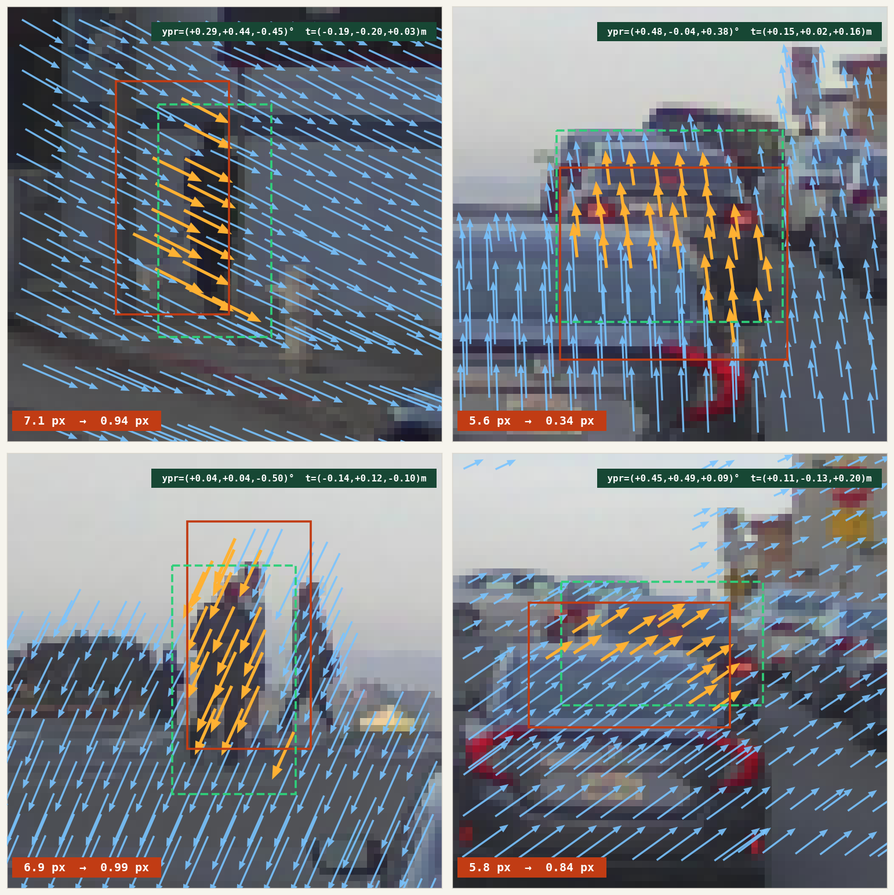
obj err before → after.§ 01 Motivation Automating the calibration engineer's eye.
Classical calibration — chessboards, targets, SfM — produces a set of rigid transforms (SE(3), i.e. rotation plus translation) between each sensor pair; they are accurate at the moment of capture and stale the moment a sensor moves. Factory calibration on a large vehicle fleet drifts out of spec within months, and running a full re-calibration pipeline in production is operationally unrealistic.
The tempting response is to throw a single large end-to-end model at the whole rig — a CalibFormer-style system that takes all sensor streams and regresses the full set of extrinsics at once. That is the wrong factoring. A unified model is expensive to train, brittle to per-vehicle sensor layout changes, and couples every sensor's error modes into every other sensor's prediction. It also bakes in a rig topology that fleet teams routinely change — adding a telephoto, moving a side LiDAR, swapping a bumper camera.
The calibration model itself is small. Six degrees of freedom per sensor pair, perhaps a few intrinsic knobs — a handful of parameters. Bundle adjustment has been solving for that class of model from 2-D observations for decades; it does not need a neural network. What it needs is observations: many per-point measurements of where each projected point actually ought to land, with uncertainty. So we factor the problem the way SfM already does:
- Network = local evidence detector. For each small RGB crop the network takes the projected LiDAR points visible inside it and, for every point, emits a 2-D Gaussian
(Δu, Δv)with full covariance — the mean says where the point should really land, the covariance says how confidently. - BA = global solver. These per-point observations are accumulated across frames and crops, then fed to a standard bundle-adjustment stage that jointly re-optimises the per-pair rigid transforms. The same stage SfM and SLAM already use. One forward pass per crop; one non-linear solve for the rig.
Why small patches are enough — and why that matters for compute. Calibration drift shows up as a local misalignment: a pole whose lidar hits sit a few pixels off its silhouette, a car whose contour does not match its returns. Whatever the underlying mis-pose, its visual signature on any single crop is bounded. The network does not need long-range attention across a full 1920×1080 frame; a small transformer on a 64×64 or 128×128 crop is enough. Attention cost scales with patch area, not image area, and a drive log yields millions of crops per vehicle per day — cheap per-patch cost is what makes the approach operationally sane.
The same primitive covers every sensor pair. Any two sensors with overlapping FOV and a shared geometric primitive — edges, points, object boundaries — can be posed as: "given projected sensor-A primitives on image B, predict the 2-D pull-back with uncertainty onto image B features." Concretely:
- LiDAR → camera. Point clouds projected onto RGB, the case we train here.
- Camera → camera, forward-forward. A telephoto paired with the main forward camera (
TELE+FCM) share a narrow overlap band; features triangulated in one can be projected into the other, and the residual estimator pulls them back onto the correct pixels. This is the common case for modern multi-focal front rigs where tele and wide drift against each other after thermal cycling. - Camera → camera, side overlap. Adjacent surround cameras with 10–20° shared FOV.
- RADAR → camera. Coarse radar points projected onto image, corrected to nearest RCS-consistent visual structure.
Where this work sits in the roadmap. The report ahead trains and validates the residual detector on public data — PandaSet here, NuScenes + Waymo in the upcoming joint run — with synthetic calibration drift applied at load time. The end-goal, covered in §08, is to move the same primitive onto our internal rigs (TMPOPC, TSS4), close the loop with an actual BA solver, and compose it with motion-distortion correction and LIVO mapping into the simulation substrate autonomy will need for the next decade.
The dataset used for this report is PandaSet — 103 outdoor driving scenes with synchronised Hesai Pandar64 LiDAR and six RGB cameras — perturbed with small synthetic calibration drift at load time, so the model sees a consistent training signal. The narrow research question here: how well does the residual generalise across object instances the model has not seen? Earlier runs held out whole scenes; here we hold out objects, isolating appearance-level generalisation from the larger scene-domain shift.
1.1 Prehistory: the toy-data lineage
Before real LiDAR ever touched the model, the whole stack was shaken out on a fully synthetic 2-D toy: coloured rectangles on a flat background, points sampled on each shape at a fixed depth, and a uniform (tx, ty) shift applied to simulate calibration drift. We iterated through a dozen small variants (v7…v20) to lock down the architecture before committing to the expensive real-data pipeline. The last of these — v20_3layer_randdepth — was a three-layer coarse-to-fine cross-attention decoder on 64×64 crops with two objects per scene at randomised depths and a ±16 px offset budget; it reached obj NLL 1.61 on held-out synthetic scenes (100 ep, 5.5 min, 1.16 M params). The PandaSet model below is the same architecture, widened to four layers with a ConvNeXt stem and a frustum-pooling head; everything that carried over from the toy stage is unchanged.

v20_3layer_randdepth). Green × = GT projection, coloured dots = distorted input, arrows = predicted correction. Two objects with independent depths; background points on the flat plane. Per-crop obj error 13.27 px → 1.15 px after the model's pull-back.§ 02 Problem Setup One crop, one evidence packet.
Each training example is a 128×128 RGB crop centred on a single 3-D object, together with the LiDAR points visible in the crop projected as (u, v, d) — image coordinates plus depth. A synthetic calibration perturbation (≤ 0.2 m translation, ≤ 0.5° rotation) is applied before projection, producing a distorted copy of each point; the regression target is the 2-D offset from the distorted projection back to the true projection. After a single forward pass, each crop yields a batch of per-point (μ, Σ) observations — one "evidence packet" that the downstream bundle-adjustment stage consumes.
Points are tagged obj or bg. Object points live inside the 3-D bounding box — sparse (≈ 20–40 per crop) but visually anchored. Background points are whatever else the LiDAR returns inside the crop — road, buildings, distant cars — dense but often weakly constrained by the image.
§ 03 Method CalibNetDepth, cross-first.
3.1 Architecture
3.2 Frustum encoding
A plain PointMLP treats each LiDAR point in isolation — it sees (u, v, d) and nothing about its neighbours. But calibration residuals are a local-geometry problem: a point sliding sideways is only meaningful relative to points at similar depth. The frustum encoder adds that local context. For each query point i we form a 3-D box in (u, v, d) space, take the k UV-nearest points inside it, and summarise their relative offsets with a shared MLP followed by max-pool. The resulting per-point descriptor is added to the PointMLP token before the cross-attention decoder sees it.
(u, v, d) space — radius r_uv in the image plane, r_d along depth — and take the k UV-nearest points inside it (green filled). A point that is close in UV but at a different depth layer (grey, above/below the box) is not a neighbour: depth is what separates the query object from the road behind it. (B) A shared MLP lifts each relative offset (Δu, Δv, Δd) into ℝ^D, and a max-pool over the k neighbours produces a per-point geometric descriptor that is added to the plain PointMLP token before the decoder sees it.3.3 Loss
Per-point 2-D Gaussian negative log-likelihood with full 2×2 covariance parametrised by log σᵤ, log σᵥ, ρ. The loss is averaged over valid (non-padded) points, not summed, so the gradient scale is independent of how many points fall in a crop — important when mixing datasets with different point densities.
3.4 Object-level split
PandaSet's 103 scenes yield 33,458 object crops. Earlier runs held out whole scenes (10 % val), which conflates two failure modes: new instances and new environments. Here the concatenated crop pool is shuffled and split 90 / 10 at the instance level (seed 42), so every scene is represented in both splits but no crop appears in both.
§ 04 Results Headline numbers.

| epoch | train NLL | val NLL | train obj MSE | val obj MSE | train bg MSE | val bg MSE |
|---|---|---|---|---|---|---|
| 1 | +4.468 | +4.653 | 6.06 | 6.02 | 7.25 | 7.24 |
| 25 | +3.419 | +3.377 | 3.13 | 2.90 | 5.20 | 5.18 |
| 50 | +2.718 | +2.773 | 1.94 | 1.83 | 3.90 | 3.88 |
| 75 | +2.264 | +2.336 | 1.49 | 1.42 | 3.31 | 3.43 |
| 100 | +1.908 | +2.154 | 1.20 | 1.20 | 2.92 | 3.20 |
| 125 | +1.576 | +1.969 | 1.02 | 1.04 | 2.60 | 2.97 |
| 150 | +1.271 | +1.976 | 0.85 | 0.96 | 2.33 | 2.84 |
| 175 | +1.058 | +2.083 | 0.76 | 0.89 | 2.20 | 2.69 |
| 200 | +0.989 | +2.195 | 0.73 | 0.91 | 2.15 | 2.82 |
§ 05 Ablations What actually carries the performance.
Two design choices from §03 were isolated by re-training with a single change each — same object-level split, same 200-epoch schedule, same seed — so the comparison is apples-to-apples. The question each answers:
- Block ordering: self-first vs. cross-first. Should the query token talk to its peers before reaching for image features, or the other way around?
- Frustum encoding on / off. Is the per-point local neighbourhood descriptor (Figure 4) paying its keep, or does a plain PointMLP on
(u, v, d)already give the decoder enough positional information?
| config | best val NLL | Δ vs base | val obj NLL | val bg NLL | val MSE |
|---|---|---|---|---|---|
| baseline cross-first + frustum | +1.949 | — | +0.19 | +2.26 | 2.76 |
| self-first SA → CA per block | +2.045 | +0.10 | +0.17 | +2.25 | 2.73 |
| no frustum plain PointMLP only | +2.758 | +0.81 | +1.52 | +3.25 | 3.63 |
Self-first is a wash (+0.10 NLL). The two block orderings give essentially the same final model — obj NLL and bg NLL at the last epoch are within measurement noise of the baseline. This sharpens the earlier v10 finding, where self_first=True hurt a smaller 3-layer toy-dataset decoder: on the 4-layer ConvNeXt-plus-frustum setup the choice no longer matters much.
Frustum encoding is load-bearing. Removing it costs +0.81 NLL overall, and the damage is concentrated exactly where the design was supposed to help — obj NLL jumps from +0.19 to +1.52, an 8× increase. Background is less sensitive (+0.99). The plain PointMLP can position a token globally on (u, v, d), but it cannot see that this point sits alongside six other points forming a vertical line (a pole), or a dense cluster on a metal surface (a car roof). Those are exactly the cues object-point calibration hinges on. Figure 4's box-and-maxpool is doing real work, not decoration.
§ 06 Analysis Where the generalisation gap lives.
The sub-pixel headline obscures a more nuanced story. Training NLL continues to fall through epoch 200 (obj -0.55, bg +1.04) while val NLL flattens around epoch 130. This is not uniform overfitting: val MSE continues to decrease even while val NLL stalls.
The most likely mechanism is σ overfitting. The mean prediction (Δu, Δv) generalises — the geometric relationship between image edges and LiDAR points transfers to unseen instances. The predicted covariance, however, is being calibrated against training-set residual statistics; at validation time the Mahalanobis term (err / σ)² pays the price whenever σ is too tight for the actual observed error distribution.
The gap is also not uniform across point types. Object points generalise tightly — val obj NLL +0.19 against train -0.55, a gap of 0.7. Background points carry most of the generalisation cost — val bg +2.26 against train +1.04, a gap of 1.2. Background points are exactly the points for which the image offers weak cues — sky, road, far buildings — so calibrating σ for them is the hard part, and a larger training pool is likely the cheapest way to help.
Two directions follow naturally. (i) Multi-dataset training. Adding NuScenes and Waymo gives the covariance head a more diverse residual distribution to calibrate against. (ii) σ regularisation. Penalising log|Σ| shrinkage, or swapping to a Student-t likelihood, prevents the covariance from chasing training-set minutiae.
§ 07 Samples 48 held-out val crops.
Each tile shows per-point correction arrows (orange for object, blue for background), the raw object bounding box (red solid), the predicted-shifted box (cyan dashed), and a white centre-shift arrow. Titles read obj_err before → after, bg_err before → after, mean obj shift (dx, dy) in pixels.


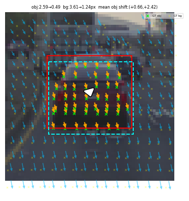


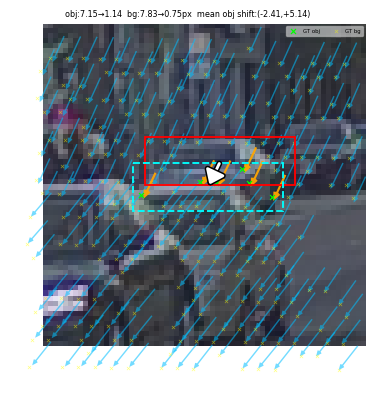
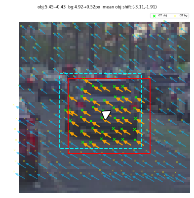
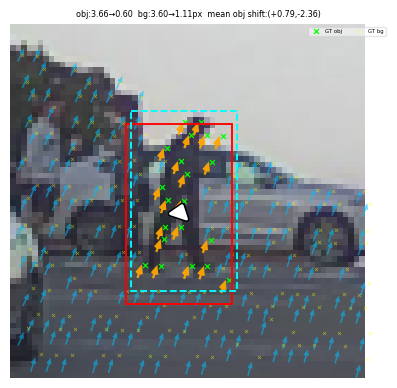


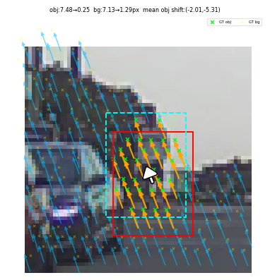
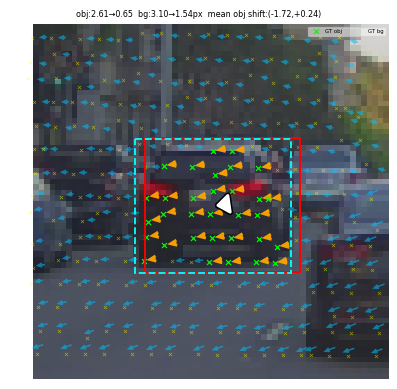
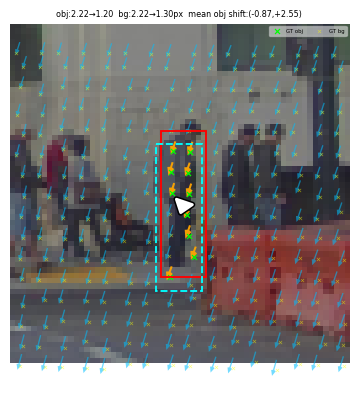
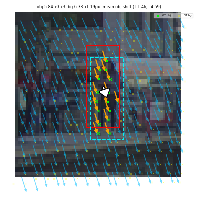

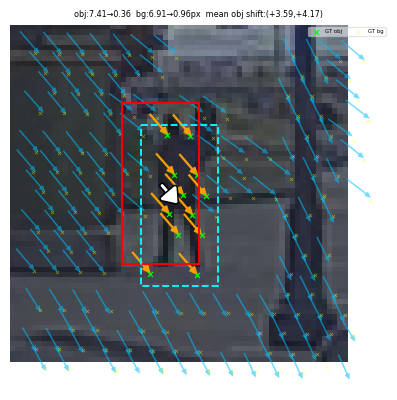


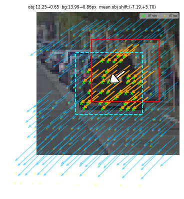

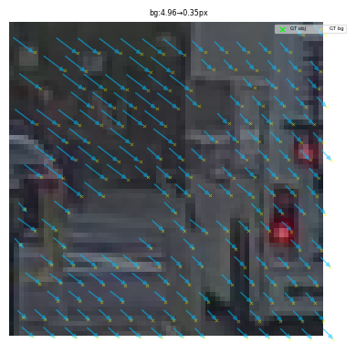


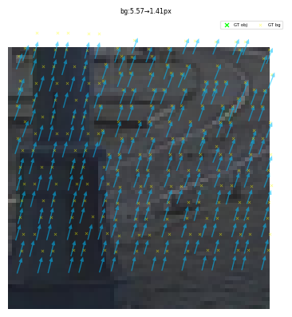

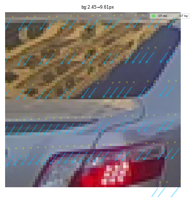


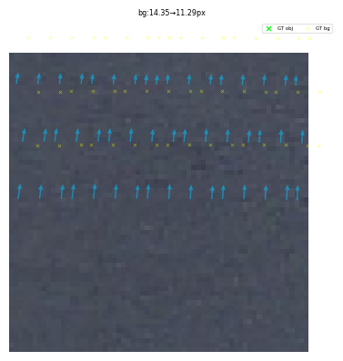

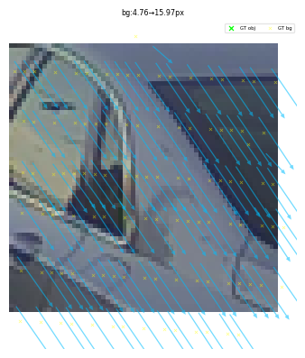

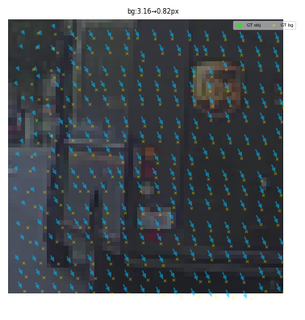
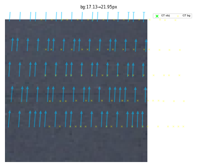


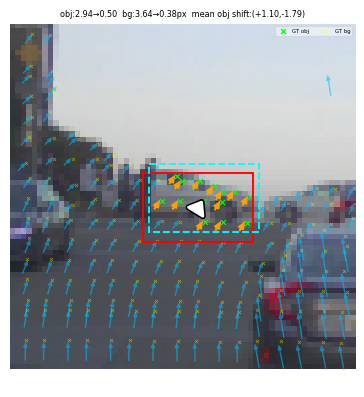


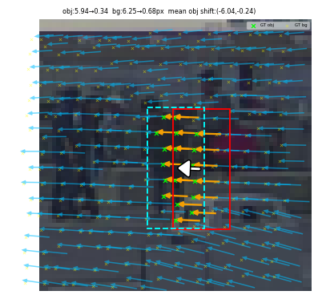
§ 08 Cross-dataset joint training One network, three sensor rigs.
Everything above was PandaSet-only. The same architecture can be trained jointly on NuScenes + PandaSet + Waymo — three completely different sensor rigs, camera intrinsics, LiDAR beam counts, and scene statistics — as a single run. Object-level shuffle across all three datasets, balanced 20 000 train / 500 val per dataset (seed = 42), same 1.62 M-parameter CalibNetDepth. The checkpoint below is a mid-training snapshot (all_v2 · ep 95/200 · val NLL 2.647) — training is still descending; numbers will improve.
Per-dataset held-out val metrics (500 samples each)
| dataset | nll (all) | nll (obj) | nll (bg) | mse (obj) | mse (bg) |
|---|---|---|---|---|---|
| NuScenes | +2.92 | +1.98 | +2.96 | 2.32 | 5.23 |
| PandaSet | +2.22 | +0.55 | +2.27 | 1.25 | 3.16 |
| Waymo | +3.01 | +1.63 | +3.10 | 1.93 | 4.35 |
PandaSet is the easiest for the joint model — 1.25 px mean object error, basically matching the PandaSet-specialist above (1.20 px in the §03 table) even though the shared network now also has to cover NuScenes' wide-FOV roof-rig and Waymo's narrow front-cam. Waymo finishes the strongest on absolute difficulty: its cache contains samples with 20–40 px input drift (from the higher focal length × closer objects), and the network still pulls them back to ~2 px. NuScenes is the hardest — its roof-rig crops often look nothing like PandaSet's (lower-mounted cameras, different night/rain statistics), and the object-scale distribution is wider. It still reaches 2.32 px obj MSE, well inside the native LiDAR-beam spacing, from a model that has seen one-third as many NS-specific gradients as a dedicated run.
Sample tiles — NuScenes
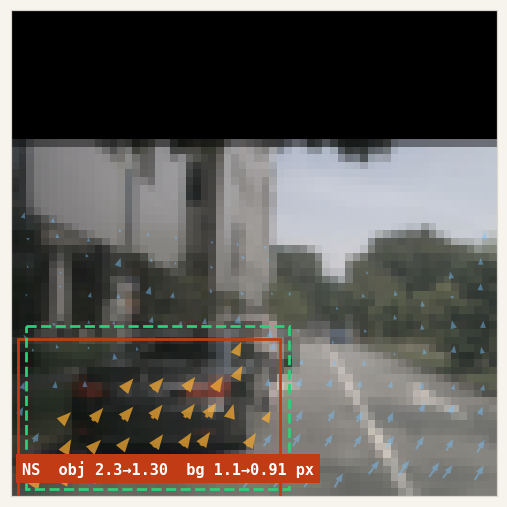
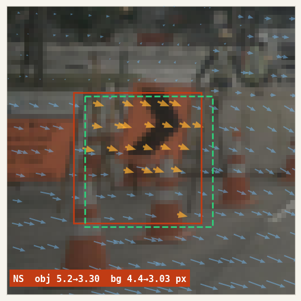
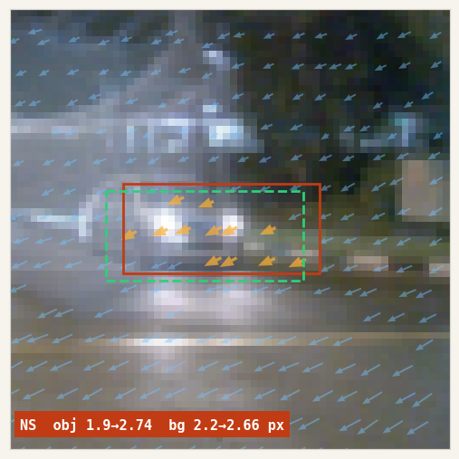

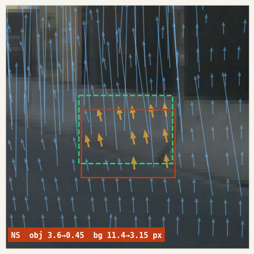

Sample tiles — PandaSet
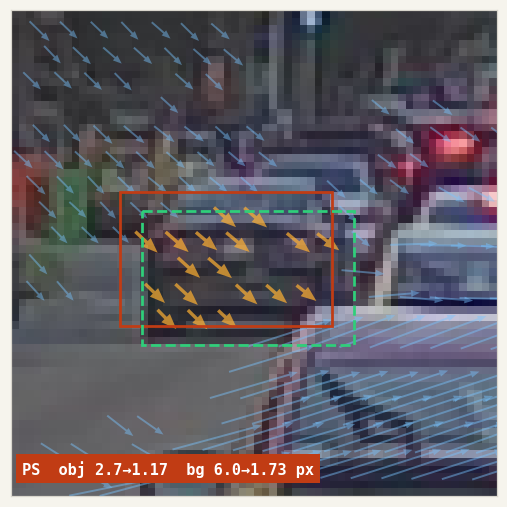


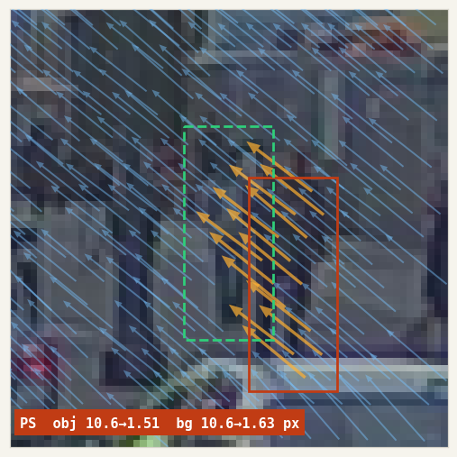
Sample tiles — Waymo


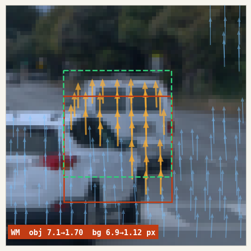
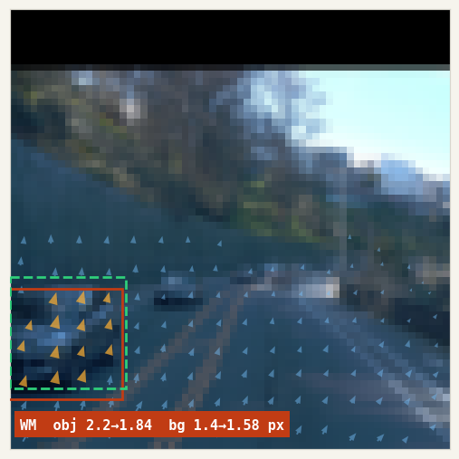
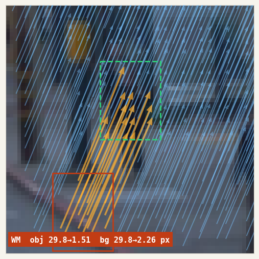
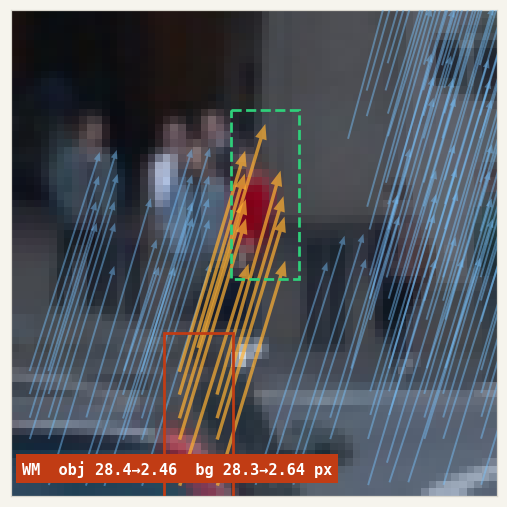
Each tile shows the same legend as §07: orange per-point arrows over the object, blue over background, red solid = distorted obj bbox, green dashed = model-corrected bbox. Titles read dataset obj err before→after bg err before→after. The Waymo row is the clearest illustration of magnitude: several tiles have input drifts in the 20–30 px range, and every one of them lands within ~2–3 px of ground truth. This is what "generalises across rigs" looks like in practice — one network, three cameras, three LiDARs, one loss.
§ 09 Next work From the bench to a production foundation.
The report above is one vertex of a larger programme: the residual-detector piece, trained on public data, validated under one generalisation regime. The pieces below compose the same local primitive — per-point 2-D Gaussian evidence plus a global BA solver — into a stack that autonomy teams can actually ship.
-
01
Adapt to in-house rigs (TMPOPC, TSS4) and close the BA loop.
The immediate next step is retraining the same detector on captures from our in-house platforms —
TMPOPCandTSS4— where calibration drift is real rather than synthesised at load time. The acceptance test is not NLL in isolation: per-point observations flow straight into a standard bundle-adjustment stage that jointly re-solves the sensor-pair extrinsics on live logs, and the output pose set must be consistent with the sensor manifests. This is the end-to-end check that separates "interesting research" from "we can retire the calibration cell on the line." -
02
Same primitive → LiDAR motion-distortion correction.
A rotating LiDAR sweeps its beams over roughly 100 ms; during that window the vehicle translates and the platform oscillates, so a single returned scan is body-frame inconsistent with itself. Treat each beam's timestamp as its own miniature extrinsic and ask the network, "where should this point really be?" — motion distortion becomes the same per-point 2-D Gaussian observation language, consumed by the same BA backend. One detector, two seemingly unrelated problem classes.
-
03
LIVO + Gaussian Splatting — a 3-D map you can actually render.
Compose pixel-accurate calibration with motion-distortion correction inside a LIVO (LiDAR-Inertial-Visual Odometry) pipeline, and the natural output is no longer a discrete point cloud but a Gaussian Splat field. Calibration accuracy at capture time is what lets splats fit tight; motion correction is what keeps them crisp along fast edges. Without both, a splat map of a driving scene falls apart around moving vehicles and low scenery. With both, the splats stay coherent frame-to-frame — a photorealistic, pose-consistent 3-D reconstruction of the real road.
-
04
Virtual cameras & object-only simulation.
A splat-level map is the substrate for two capabilities that redefine what simulation can be. Virtual camera: render the scene from any viewpoint, including cameras that did not physically exist on the rig — new focal lengths, new mounting positions, fleet-wide re-rendering from a smaller number of captured vehicles. Training data multiplies. Object-only simulation: because the static environment is modelled separately from moving agents, we can move vehicles and pedestrians through an otherwise unchanged world, stress-testing planners against edge cases that never appeared in the raw log. This is not frame interpolation. This is counterfactual driving — the scenario never happened, but it could have, and we can replay it pixel-accurate.
-
05
A foundation for the next decade of autonomy.
Calibration, pose correction, splat mapping, virtual sensors, synthetic agents — each one is, in isolation, a known technique. What makes the composition interesting is that they share a single local evidence primitive and a single global solver. The next decade of production autonomy rests on getting that primitive stable across sensors, rigs, and motion regimes, and on stacking it with mapping and rendering until the output is a world you can both measure and simulate. The PandaSet result above is one step on that path. Everything upstream of §08 is the foundation stone; everything downstream will be built on it.